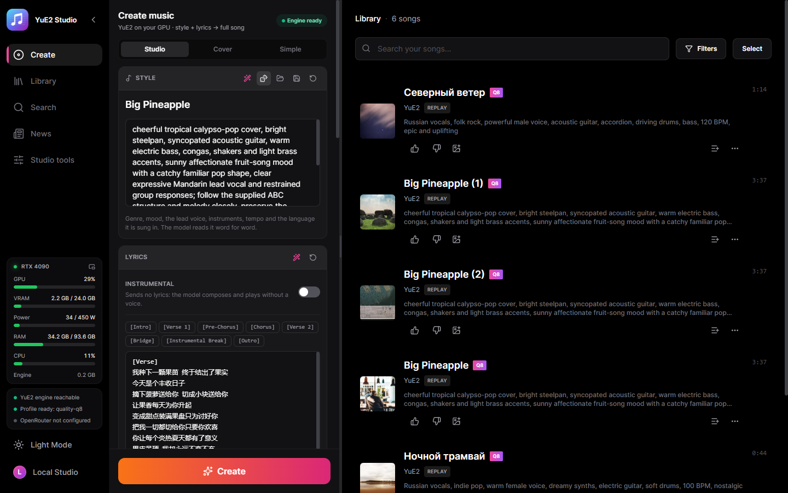
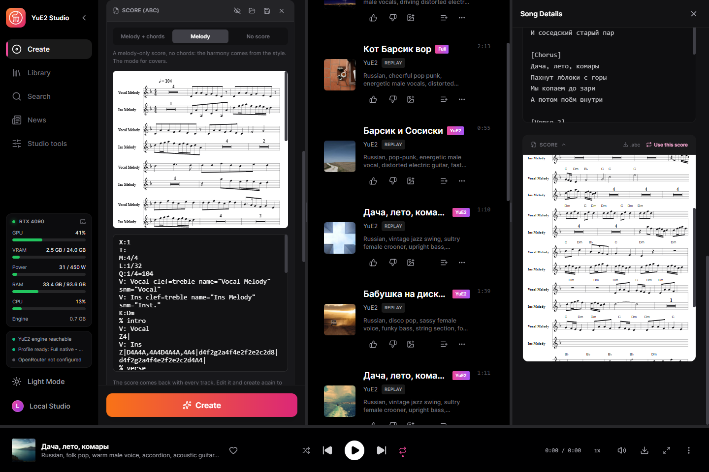
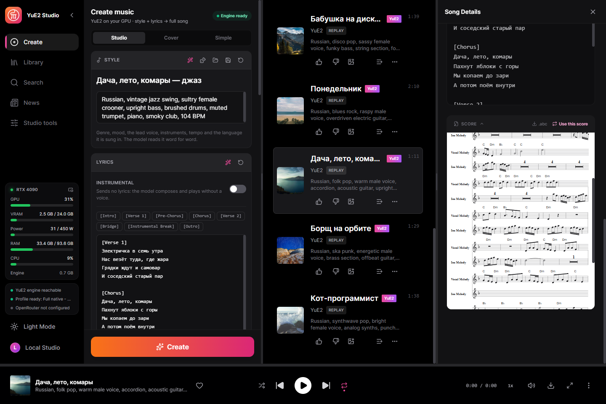
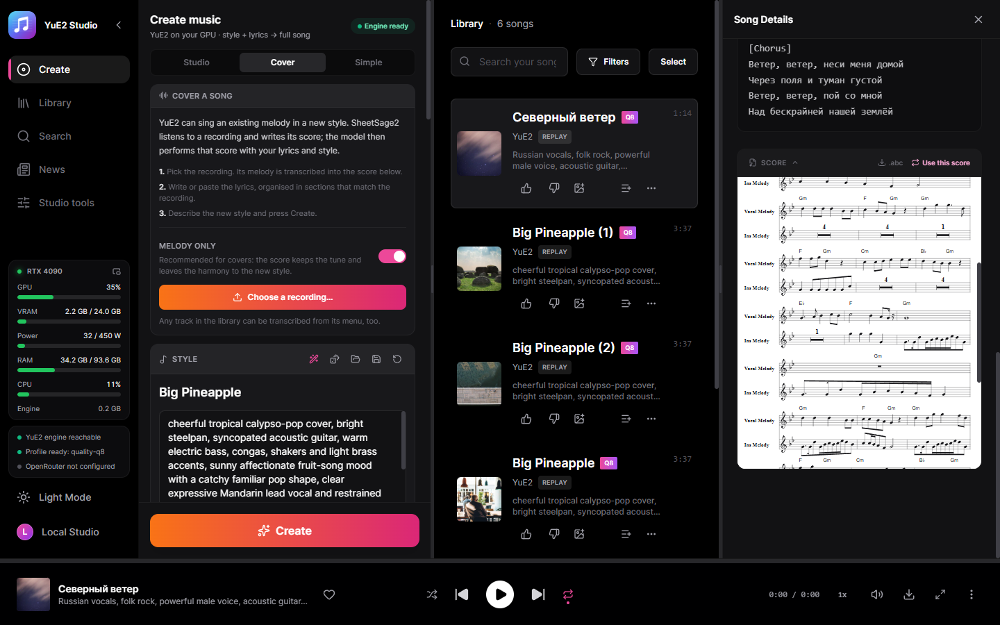
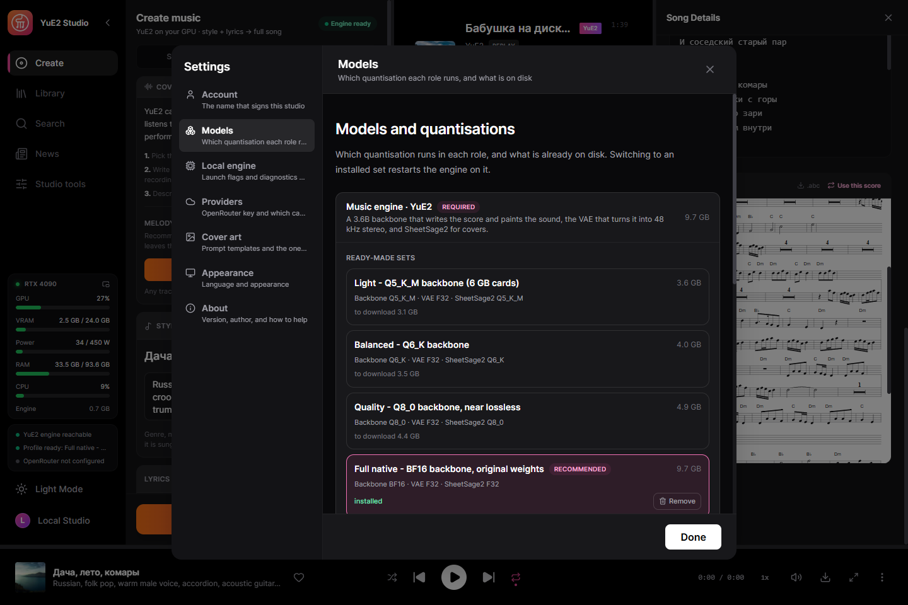

Full songs with an editable score, on your own GPU
A desktop studio for YuE2, the open song model that writes a score before it sings. Describe a style, write the lyrics, and the model composes a melody with chords as sheet music, then performs it as a full song with vocals. Read the score, change it, and render the same composition with a different sound. One executable — no Python, no launcher.
Windows 10/11 x64 and a GPU with 6 GB of VRAM: NVIDIA (GTX 16 / RTX 20 or newer) on CUDA; AMD and Intel on Vulkan are experimental. The models are downloaded from inside the studio when you decide to.

What it does
Everything below runs on your machine unless you connect a cloud key yourself.
Full songs
Up to six minutes from a style and lyrics. On an RTX 4090 with the Q8_0 set a 3:38 song renders in about 46 seconds.
An editable score
The composition comes back as ABC notation, engraved as sheet music. Edit it and create again: the composition stays, the performance changes.
Compose the score first
Only the score, in seconds, before anything is sung: read it, fix it, then create. The studio’s take on yue2.cpp’s yue-plan.
Covers
SheetSage2 writes the melody of any recording down as a score; YuE2 sings it with your lyrics in your style.
Exact replay
Every track keeps its request and audio codes: re-render it bit for bit, or with other steps, a new sound seed, several variations.
110 ready examples
The style, lyrics and score sets that ship with yue2.cpp, covers included, one click to load.
A writing assistant
A local Gemma model or OpenRouter writes the style and lyrics from an idea and edits the score on request.
Word-level karaoke
Enhanced LRC with a timestamp on every word, aligned by Parakeet or Whisper.
Stems on your GPU
Drums, bass, other, vocals, guitar and piano, separated by HT-Demucs.
Songs made with it
Rendered on a clean install with the recommended set, as the studio saved them. All in Russian.
English, funk disco, groovy male voice, slap bass, wah guitar, brass stabs, four on the floor drums, playful, 118 BPMEnglish, country, warm male baritone, acoustic guitar, pedal steel, fiddle, brushed drums, easygoing, 96 BPMSpanish, latin pop, bright female voice, nylon guitar, congas, piano montuno, bass, sunny danceable, 102 BPMMandarin, city pop, smooth male voice, electric piano, funky bass, clean guitar, drum machine, warm night mood, 108 BPMJapanese, j-rock, energetic female voice, distorted electric guitars, driving bass, fast drums, anime opening, 168 BPMRussian, folk pop, warm male voice, accordion, acoustic guitar, upright bass, 104 BPMRussian, vintage jazz swing, sultry female crooner, upright bass, brushed drums, muted trumpet, 104 BPMRussian, blues rock, raspy male voice, overdriven electric guitar, hammond organ, shuffle drums, 96 BPMRussian, disco pop, sassy female voice, funky bass, string section, four on the floor drums, 120 BPMRussian, ska punk, energetic male voice, brass section, offbeat guitar, fast drums, 150 BPMRussian, synthwave pop, clear expressive female voice, analog synths, punchy drum machine, 112 BPMRussian, upbeat pop-punk, energetic male vocals, driving distorted electric guitars, fast bass lines, crashing drums, rebellious and fun, 185 BPMScreenshots
The studio itself, in this language.




Models
A runnable set is the YuE2-3B backbone and the VAE; SheetSage2 is optional and only needed for covers.
| Your GPU | Set | Download |
|---|---|---|
| 12 GB+ | Full native — BF16, original weights | 9.7 GB |
| 8 GB+ | Quality — Q8_0, near lossless | 4.9 GB |
| 7 GB+ | Balanced — Q6_K | 4.0 GB |
| 5.5 GB+ | Light — Q5_K_M | 3.6 GB |
Sizes include SheetSage2. The studio preselects the set your card can run, but the download is always your decision. Every file is checked by SHA-256 against a pinned Hugging Face revision, and an interrupted download resumes.
Getting started
- Install — run the installer, or unpack the portable archive anywhere.
- Choose a set — the first screen preselects what your card can run; it downloads only what is missing.
- Write — a style and lyrics, or load an example; an instrumental is one switch.
- Create — the engine starts by itself and the song lands in your library with its score.
What runs where
Local by default. A cloud key is added by you, for the capability you choose.
| Part | Runs | Size |
|---|---|---|
| YuE2 engine (yue2.cpp) | Your GPU: CUDA, Vulkan or the processor | bundled |
| YuE2 model set | Your GPU | 3.6–9.7 GB |
| NVIDIA cuBLAS | NVIDIA cards only | 391 MB, once |
| Karaoke timings — Parakeet or Whisper | Your machine | optional |
| Stem separation — HT-Demucs | Your GPU or CPU | optional |
| Writing assistant | Local Gemma or OpenRouter | optional |
How it is built
The service is compiled into the desktop binary and supervises the C++ engine. Finished songs are imported by the service itself, so a result survives a reload or a closed window.
React UI ─┐
├─ YuE2-Studio.exe (Tauri window + Rust/Axum service)
Rust axum ┘ │
└─ yue2.cpp `yue-server` (C++/CUDA, GGUF)
Privacy
Your music is yours, and it stays on your disk.
No account
There is nothing to sign up for.
No telemetry
The studio does not report what you generate.
Cloud is opt-in
Nothing leaves the machine until you add a key, and then only for that capability.
Who made this
Nerual Dreming — artist, founder of ArtGeneration.me and the Neuro-Cartel community, author of ACE-Step Studio and MiniMax Music3 Studio, which this studio grew out of.